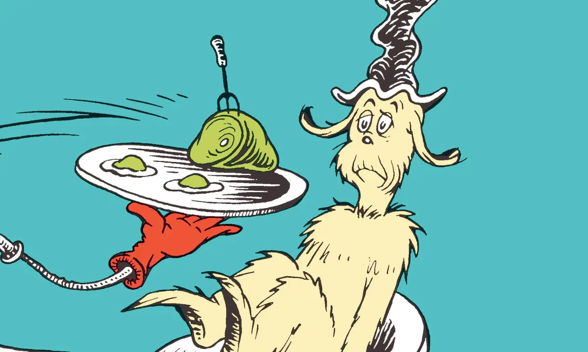
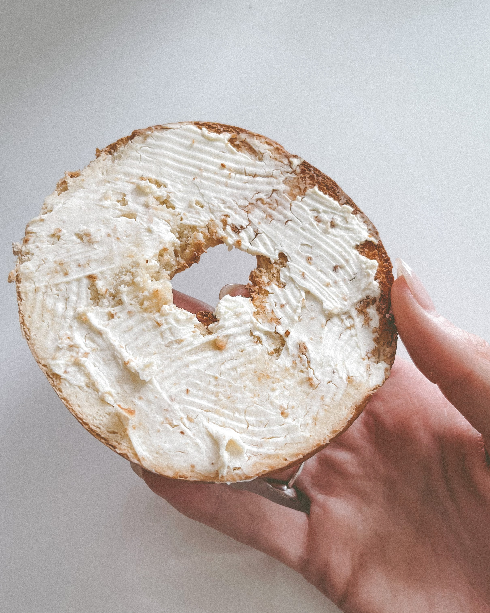
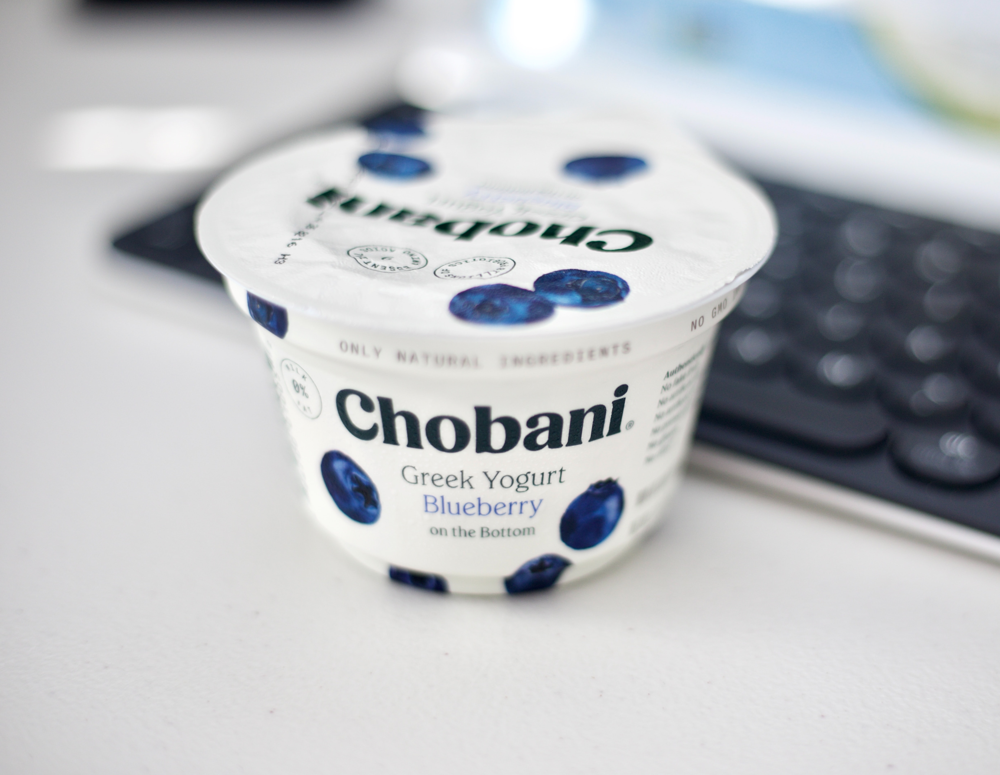

Foods I don't eat.
Just some types of food I find disgusting and/or have had traumatic experiences with and would not go near at any cost. One would think Dr. Suess's Green Eggs and Ham would have solved these issues early on in childhood but no, up to this day, these food phobias still very much dominate my daily life.

Some random information.

Avocados
It's the texture.
Cilantro
Terrifyingly pungent.

Cream cheese
Why do people put them in hand rolls?

Yogurt
Smells spoiled.
I DO NOT LIKE THEM HERE OR THERE.
I DO NOT LIKE THEM ANYWHERE.
I DO NOT LIKE GREEN EGGS AND HAM.
I DO NOT LIKE THEM, SAM-I-AM.
Call to action! It's time!
Help me by clicking that button right over there!